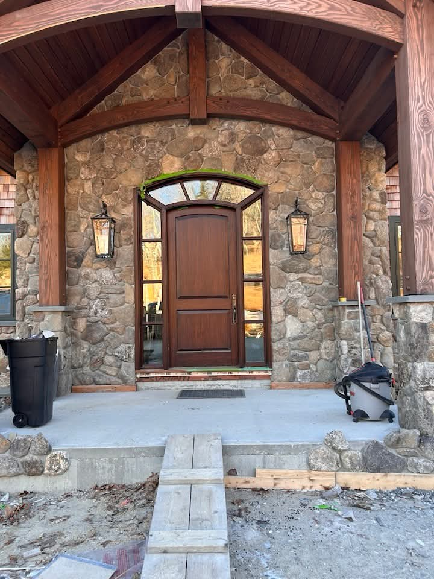

With 45 years of experience serving the Lakes Region, Bonner Builders has established a reputation for excellence in custom carpentry, structural integrity, and personalized home solutions.
To provide high-quality, reliable construction services that respect the traditional craftsmanship of the past while utilizing the modern building standards of today.